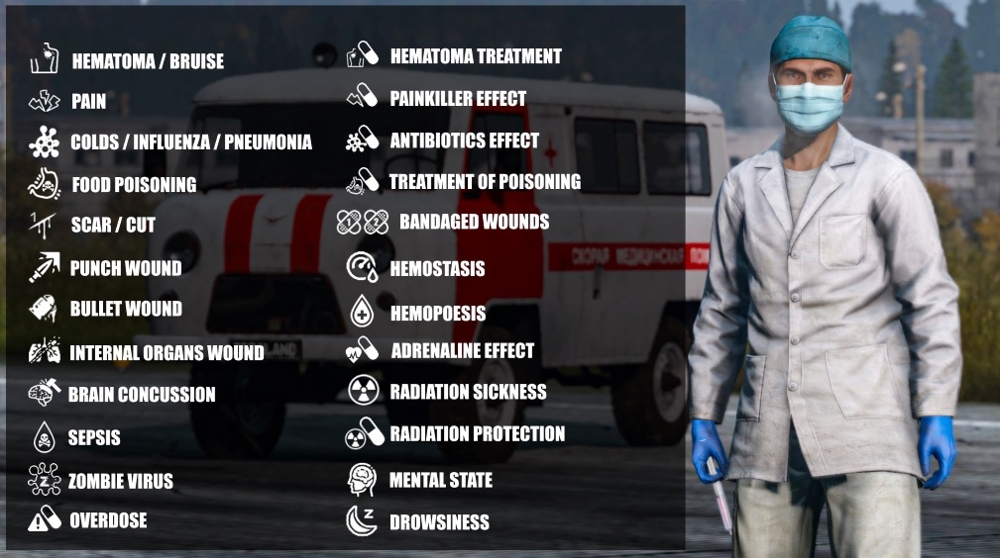
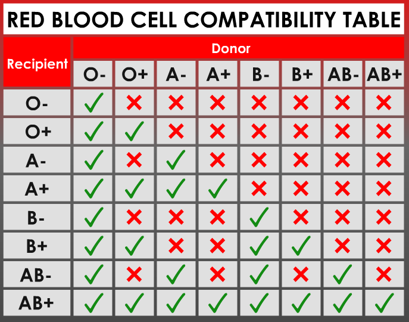

Water beats weapons
Carry a filled bottle or waterskin and know where your next reliable refill is before crossing open desert.
Your Nasdara playbook: water trucks, rebuildable wells, underground water routes, heatstroke, sandstorms, structures, and the full Terje medical references.
Nasdara's desert turns basic survival into an expedition. Locate water, establish a shaded fallback, then go after weapons and loot.
Carry a filled bottle or waterskin and know where your next reliable refill is before crossing open desert.
Plan shade breaks through settlements, rock formations and buildings. A straight-line run can be more dangerous than a longer protected route.
Use lightweight desert clothing, head protection and dust goggles. Heavy protective gear may be useful in a fight but can make heat management harder.
Mark a shelter and an alternative water stop. If your planned pump or truck is dry, don't get stranded without a fallback.
Water is scarce. Learn the difference between potential water-source locations and water you have actually confirmed is available.
Search settlements, roads and utility areas for water-truck spawns. Check whether each truck actually supplies water before relying on it. Exact spawn locations are not guaranteed.
Some wells start damaged and need construction work to restore them. Bring building supplies or team up with other survivors; a broken well may not help you until rebuilt.
Explore water caves, underground passages and irrigation tunnels for possible access to water and shelter. Check the actual source before filling your containers; not every passage is a refill point.
Carry backup water in bottles, canteens or waterskins when available. Refill at a confirmed safe source and treat questionable water appropriately.
Sunlight is a survival threat. Watch temperature and condition indicators and act early instead of waiting for collapse.
Move indoors, beneath solid shelter or into deep shade. Rest there while your character cools, especially after a long sprint or heavy work.
Stay hydrated, but keep water in reserve for cooling. DayZ 1.30 introduced actions to wet clothing and wash your face—use them when appropriate.
Slow down, avoid unnecessary exertion and pause between trips. Plan long journeys around heat and available shade.
Choose breathable desert gear and suitable headwear. Heavy equipment can be valuable but don't ignore what it does to your heat situation.
Storms reduce visibility and can expose you to irritated eyes and damaging dust. Protection and patience are more valuable than blindly pressing ahead.
Wear dust goggles to help protect your eyes. Face wraps, scarves and other appropriate dust protection are worth carrying for exposed travel.
Take cover inside a building or other protected area until conditions improve. Avoid unnecessary travel when you can't see landmarks or threats clearly.
Carry some spare water for washing your face and clearing dust after a storm. Water is useful for more than drinking on Nasdara.
Badlands introduces irritated eyes and silicosis alongside heatstroke. Pay attention to condition indicators after dust exposure and consult current game guidance.
Nasdara has more to offer than ordinary fences. Existing mud and stone structures can be restored, and utilities can become part of your survival plan.
Explore damaged mud-brick and stone buildings. Some can be repaired or fortified into functional shelter. Check each structure for available construction interactions.
Bring appropriate tools and materials. Use the in-game construction widgets to see what an individual repair or building stage requires.
Repairable wells can turn a dangerous route into a safer one. Work with teammates when a reconstruction stage needs extra hands.
Plan a base around shade, known water access, supply routes and nearby exits. Underground irrigation routes may offer alternate approaches, so scout carefully.
A little preparation opens the door to much bigger expeditions.
Nasdara includes Morse-code transmissions with clues such as coordinates and bunker codes. Listen carefully before setting out.
Infected, other players and territorial dogs can create trouble. Scout your entry and exit before committing to a location.
They're helpful for long distances but crashes and breakdowns can leave you stranded. Carry water even when traveling fast.
Navigate from settlement to shelter instead of charging across open ground. Terrain is part of survival.
Monitor new injuries, diseases and temporary effects carefully. The medical overhaul can introduce complications that vanilla DayZ does not.
Use this legend to identify the categories of Terje icons shown in the reference image. An icon signals a condition or active effect—consult the official guide for the correct treatment.

This table shows which donor red blood cell types can be given to each recipient blood type, matching your reference chart.
| Recipient ↓ Donor → | O− | O+ | A− | A+ | B− | B+ | AB− | AB+ |
|---|---|---|---|---|---|---|---|---|
| O− | ||||||||
| O+ | ||||||||
| A− | ||||||||
| A+ | ||||||||
| B− | ||||||||
| B+ | ||||||||
| AB− | ||||||||
| AB+ |

Small preparations give you options when the weather, your health or a planned water source fails.
Do not leave a known water source with empty containers before a long crossing.
Keep eye protection ready when winds pick up and dust starts moving.
Keep water available for washing your face or wetting clothes when heat or dust becomes dangerous.
Use buildings, repaired structures and covered terrain to break up sun exposure.
Use compatible blood supplies and the shared medical reference before attempting a transfusion.
Don't treat every icon with the same item. Use the Medicine and Skills references below.
Respect community rules and leave passages, routes and important resources accessible.
Report verified water trucks, wells, caves and working builds in Discord so players can learn the map together.
Prepare for heat, watch the sky, protect your eyes and check your medical kit before heading out.